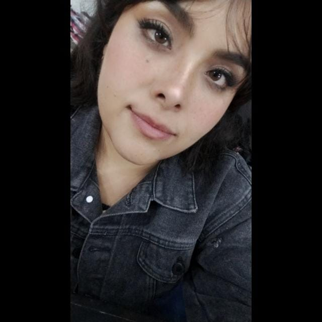

Hola, soy Maria Juana Jimenez Cancino

Soy Maria Juana, Estudiante Tecnologías de la Información apasionada por el desarrollo Front-End, las redes de computadoras y el mundo fascinante de la tecnologia y el machine learning. Desde mi enfoque en el desarrollo Front-End, busco crear experiencias de usuario que sean atractivas y funcionales. Las redes de computadoras han sido una constante fascinación en mi carrera, donde he trabajado en diseñar arquitecturas de red eficientes y resolver desafíos complejos. Estoy emocionada por las oportunidades que este viaje tecnológico tiene para mi.
Desarrollo Web
Mi enfoque se centra en la fusión de la estética y la eficiencia, manteniéndome actualizada con las últimas tecnologías para ofrecer soluciones web innovadoras.
Machine Learning
Exploro la complejidad de algoritmos inteligentes, buscando aplicaciones innovadoras para la toma de decisiones y la predicción de resultados. Este emocionante campo representa para mí la vanguardia de la inteligencia artificial, donde cada modelo creado es un paso hacia el futuro tecnológico.
Ciberseguridad
En el dinámico mundo de la ciberseguridad, mi enfoque como profesional se centra en garantizar la integridad y la confidencialidad de la información.

Maria Juana muestra un rápido progreso en la adquisición de habilidades técnicas clave y una gran disposición para colaborar en proyectos. Su actitud positiva y su voluntad de aprender constantemente son cualidades valiosas en el campo de la programación. No tengo dudas de que Mari seguirá creciendo y haciendo contribuciones significativas como desarrolladora frontend en el futuro.
Anel Montes
Mentora en Tecnolochicas
Maria Juana sin duda tiene un gran potencial que continúa explotando a medida que avanza en su camino profesional. Es una persona con la que se puede contar para trabajar en equipo, tiene determinación por hacer las cosas y cuando desconoce de un tema, hace todo lo posible para conocer sobre el mismo y no quedarse atrás. Su actitud brinda confianza a los integrantes del equipo con los que trabaja y su sentido de responsabilidad es de reconocer. De seguir así, logrará todo lo que se proponga en el futuro.
César Solis
Ingeniero en Tecnologías de la Información
El progreso que Maria Juana ha demostrado en la adquisición de nuevas habilidades y conocimientos para su desarrollo profesional ha sido increíble, tratando siempre de buscar nuevos retos que enfrentar y dando siempre excelentes resultados. Sin duda este crecimiento y preparación le depararán un futuro lleno de éxito en su carrera profesional en el área de desarrollo frontend.
Stephani Montserrat Dominguez Martinez
Ingeniera de Sistemas